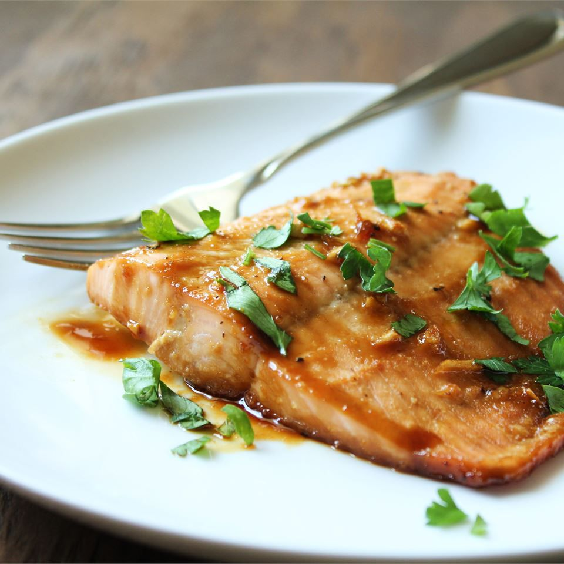

Maple Salmon

Description
This maple glazed salmon is delicious and very easy to prepare.
It's easy to make with simple ingreidents you probably already have on hand.
Ingredients
- Maple Syrup
- Soy Sauce
- Garlic
- Seasonings
- Garlic Salt
- Ground Black Pepper
- Salmon
Steps
- Preheat the oven to 400 degrees F
- Stir maple syrup, soy sauce, garlic, garlic salt, and pepper together in a small bowl.
- Cut salmon into four equal-sized fillets; place in a shallow glass baking dish and coat with maple syrup mixture. Cover the dish and marinate salmon in the refigerator for thirty minutes, turning once halfway.
- Place the baking dish in the preheated oven and bake salmon uncovered until flesh flakes with a fork, about twenty minutes.